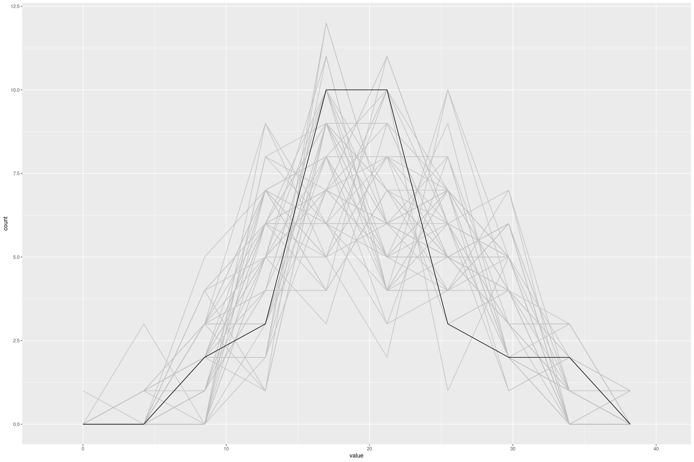

Making Bayesian Predictions with Stan and R
This is the third on a series of articles showing the basics of building models in Stan and accessing them in R. Now that we can specify a linear model and fit it in with formula syntax, and specify priors for the model, it would be useful to be able to make predictions with it.
In principle making predictions from our linear model \(y \sim N(\alpha + \beta x, \sigma)\) is easy; to make point predictions we take central estimates of the coefficients \(\hat{\alpha}\) and \(\hat{\beta}\) and estimate \(y \approx \hat{\alpha} + \hat{\beta} x\). If we want to represent our inferential uncertainty we could take posterior draws of the coefficients and simulate the random normal samples rnorm(nrow(x), alpha + x %*% beta, sigma). However the stanfit object doesn’t have enough information on how to do this; we’re going to have to add it. And ideally we’d be able to use R’s inbuilt predict function like with other models.
Dispatching predictions
To be able to use predict we’re going to need to return an S3 class containing all the relevant data. We can call the class whatever we want, for the sake of argument I’m going to call it my_linstan (my linear stan model). We can also package, as well as the stanfit object, any other relevant information we need for predictions. All we need to do is replace the fit returned at the end of our R functions like fit_stan_linear with:
structure(list(fit=fit, terms=terms(formula, data=data), data=data), class=c("my_linstan"))We can then delegate standard functions like print, as.matrix and as.data.frame to the stanfit model:
print.my_linstan <- function(object, ...) {
print(object$fit, ...)
}
as.matrix.my_linstan <- function(object, ...) {
as.matrix(object$fit, ...)
}
as.data.frame.my_linstan <- function(object, ...) {
as.data.frame(object$fit, ...)
}Dealing with Formulas
One of the tricky things here is we’re fitting the model with a formula, and to predict we’re going to have to understand how to use that formula on a potentially different dataset. R formulas are very flexible in that you can include things like transformations of variables like I(x^2), interactions like x:y, one-hot encoding categorical variables, and even infer the rest of the variables like .. I found it hard to get my head around how to manipulate formulas, but Data Camp’s tutorial on R Formulas is a good place to start.
Consider a formula like y ~ .. The formula depends on the context, on a dataframe containing x and y it expands to y ~ x; but on a dataframe containing columns v, w and x, and y it expands to y ~ x + v + w. So when we first fit a model we can’t just capture the formula but the context of the data it refers to.
The terms function, mentioned above, does exactly this, and encodes a lot of useful information in attribures like whether it has an intercept (using attr(., "intercept")) which is much better than the method I used before of looking for (Intercept) in the terms matrix (in the pathological case when a variable is named (Intercept)). So when the model is fit we can capture the terms using terms(formula, data=data), remove the response with delete.response, and then get the model matrix for new data using model.matrix with the new data. Finally we can multiply it with the relevant coefficients from the model.
Putting this together we can define a predict function:
predict.my_linstan <- function(object, newdata=NULL) {
if (is.null(newdata)) {
newdata = object$data
}
mm <- model.matrix(delete.response(object$terms), data=newdata)
coef_matrix <- as.matrix(object$fit)
# Calculate the central coefficients
coefs <- apply(coef_matrix, 2, median)
# Calculate b * x
preds <- (mm %*% coefs[colnames(mm)])[,1]
unlist(preds)
}Posterior Draws
For making posterior draws we can define posterior_predict in a way compatible with rstanarm.
posterior_predict <- function (object, ...)
{
UseMethod("posterior_predict")
}The calculation is similar to predict, but we can take a sample of length draws of the posterior coefficient estimates. Then we can calculate the expected prediction by matrix multiplication, and add random normal noise with the posterior sigma. To make the calculation easier we can make a helper function that takes a random sample matrix centred at a 2 dimensional matrix mean, with a row vector sd.
rnorm_matrix <- function(mean, sd) {
stopifnot(length(dim(mean)) == 2)
error <- matrix(rnorm(length(mean), 0, sd), ncol=ncol(mean), byrow=TRUE)
mean + error
}For example rnorm_matrix(matrix(c(0,1,0,0), ncol=2), c(0,1)) gives something like
| 0 | 0.342 |
| 1 | -0.743 |
posterior_predict.my_linstan <- function(object, newdata=NULL, draws=NULL) {
if (is.null(newdata)) {
newdata = object$data
}
mm <- model.matrix(delete.response(object$terms), data=newdata)
coef_matrix <- as.matrix(object$fit)
if (!is.null(draws)) {
coef_matrix <- coef_matrix[sample.int(nrow(coef_matrix), draws),]
}
point_preds <- coef_matrix[,colnames(mm)] %*% t(mm)
# Note this could do the wrong thing if "sigma" is a coefficient
preds <- rnorm_matrix(point_preds, coef_matrix[,"sigma"])
preds
}Finally we can use this to, for example, compare the distribution of the response variable from the model to the actual data.
fit_mtcars <- fit_stan_linear(mpg ~ ., data=mtcars)
posterior_predict(fit_mtcars, draws=50) %>%
as.data.frame() %>%
mutate(rn=row_number()) %>%
pivot_longer(-rn) %>%
gf_freqpoly(~value, group=~rn, bins=10, colour='grey') %>%
gf_freqpoly(~mpg, group=FALSE, bins=10, data=mtcars)
Putting in the effort to make it easy to fit and make predictions with these models requires some effort, but then we can just focus on the modeling task. In the next article we will extend linear model to deal with censored variables with a Tobit regression and can use these tools to analyse the results.